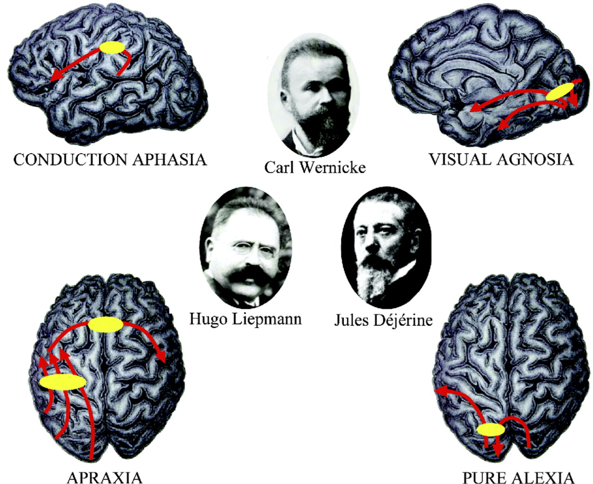
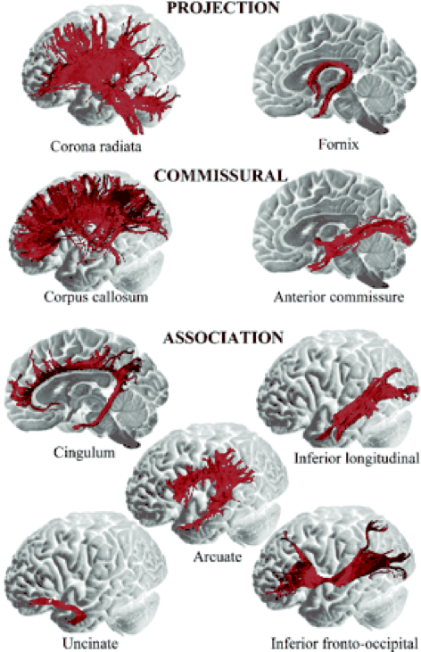
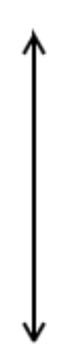
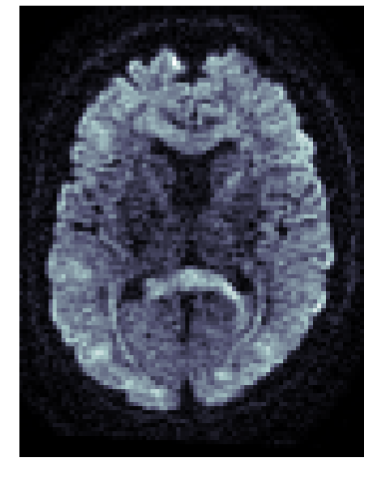
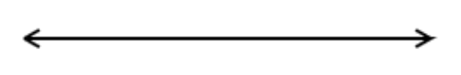
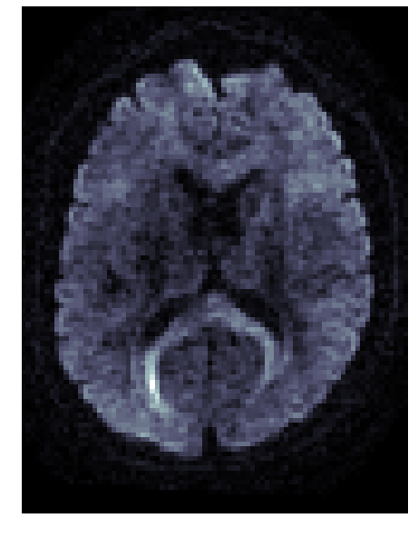
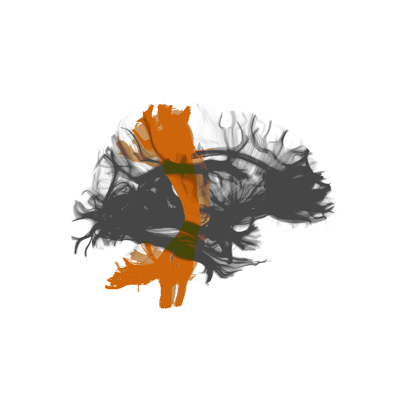
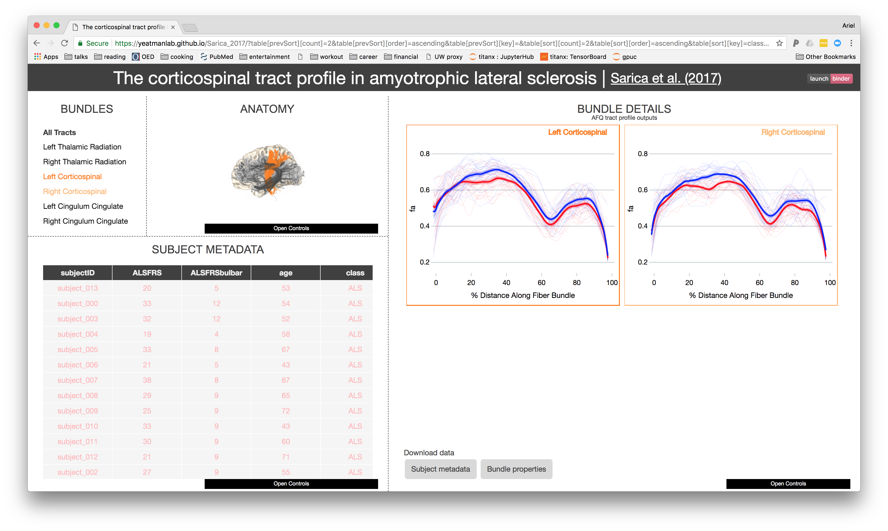

AFQ-Browser
Follow along at:


Normal behavior is supported by brain networks
Studying brain networks
Not just static cables!
Brain connections develop and mature with age
Individual differences account for differences in behaviour
Adapt and change with learning
The era of brain observatories
Human Connectome Project (HCP), N = 1,200
Healthy Brain Network (HBN), N = 10,000
Adolescent Brain Cognitive Development (ABCD),
N = 10,000
UK Biobank, N = 500,000
Opportunities
New data sets will enable important new discoveries
Data-driven discovery
Diffusion MRI measures the physical properties of brain connections
Diffusion MRI
Diffusion MRI
Diffusion MRI
 Diffusion MRI
 Diffusion statistics

The 3D structure of each brain is unique
Tracts provide the anatomically correct coordinate frame
The 3D structure of each brain is unique
Tracts provide the anatomically correct coordinate frame
Tractometry
Amyotrophic Lateral Sclerosis (ALS)
Challenge: how do we incentivize data sharing?
Data sharing is not incentivized and is not easy enough
Results from large multi-dimensional datasets are hard to understand
Hard to communicate
Hard to reproduce
Solution: tools for exploration with data sharing built in!
A browser-based tool for visualization and analysis of diffusion MRI data
Jason Yeatman
(UW ILABS)
Adam Richie-Halford
(UW eScience)
Josh Smith
(UW eScience)
Anisha Keshavan
(UW eScience →
Child Mind Institute)
A browser-based tool for visualization and analysis of diffusion MRI data
A web-based application
Leverages modern visualization frameworks
Builds a web-site for a diffusion MRI dataset
Automatically uploads the website to GitHub
https://yeatmanlab.github.io/Sarica_2017
Exploratory data analysis
Enhances published results
Linked visualizations facilitate easy exploration
Enables new discoveries in old datasets
Automatic data sharing
Further exploration
Data sharing facilitates interdisciplinary collaboration
Dimensionality reduced data in tidy table format
Facilitates interdisciplinary collaboration